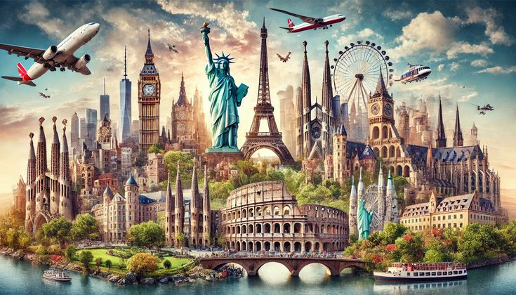

As cidades europeias possuem origens que remontam a milhares de anos, muitas delas fundadas ainda na Antiguidade. Civilizações como os gregos e os romanos foram responsáveis pela criação de importantes centros urbanos que, até hoje, influenciam a organização das cidades modernas. Ruínas, templos e estradas antigas são exemplos dessa herança histórica preservada ao longo do tempo.
Durante a Idade Média, muitas cidades europeias cresceram ao redor de castelos, muralhas e igrejas, servindo como centros de proteção e comércio. Nesse período, surgiram feiras, mercados e rotas comerciais que impulsionaram o desenvolvimento econômico. As construções medievais, como catedrais e fortalezas, ainda são marcos importantes em várias cidades da Europa.
Com o passar dos séculos, especialmente durante o Renascimento e a Revolução Industrial, as cidades passaram por grandes transformações. Novas ideias, avanços científicos e o crescimento das indústrias mudaram a forma de viver e organizar os espaços urbanos. Muitas cidades expandiram-se rapidamente, incorporando novos estilos arquitetônicos e tecnologias.
Atualmente, as cidades europeias são resultado dessa longa trajetória histórica, combinando elementos antigos com características modernas. Monumentos históricos convivem com infraestruturas contemporâneas, criando ambientes únicos. Essa mistura permite que cada cidade conte sua própria história, atraindo pessoas interessadas em cultura, conhecimento e turismo.